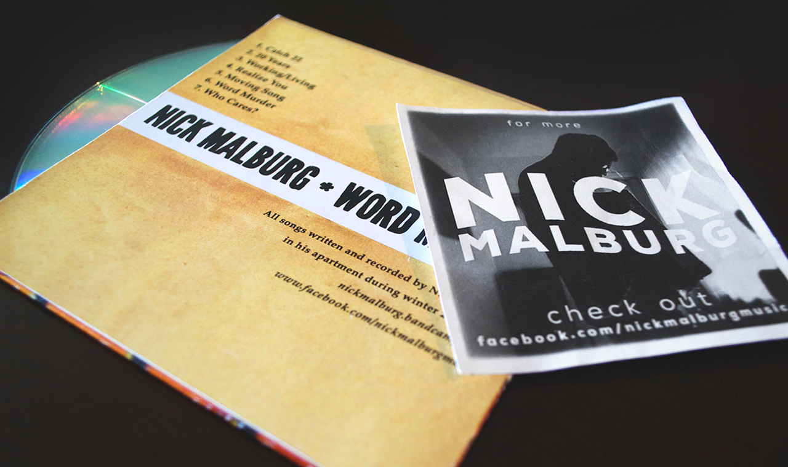
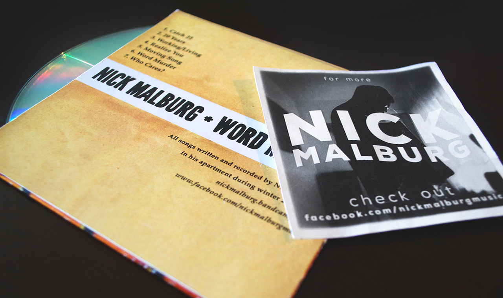

Laura Stevenson T-shirt
This one started out as fan art. Making self-initated designs for bands I like is just one tactic I use to keep my skills sharp. If I can, I like to send what I've made to the band members. Laura Stevenson and the Cans are a spectacular indie/folk/rock band who eventually had their logo made into a T-shirt. After the first batch of shirts were printed and sold out, I receive an email informing me it was one of the most popular shirt they had. They reprinted the shirt, this time with different colors, and I finally got my hands on one. Like I said, the first batch sold out.
laurastevenson.netOne Second on the Internet
One second doesn’t seem like much time, but a lot can happen. In one second, there are approximately 200 posts on Reddit, 4,000 tweets on Twitter, and 50,000 likes on Facebook. Visualizing the traffic the Internet experiences is very difficult. Once the numbers get so big, they start to lose meaning to us. This is why “One Second on the Internet” provides an illustration of how much activity takes place in such a small unit of time.
onesecond.designly.com 

Nick Malburg: Word Murder
Nick Malburg is solo folk/punk musician from Pittsburgh, Pennsylvania. He not only writes catchy tunes, but amazing lyrics. The entire album, “Word Murder" was recorded and mixed by Nick himself. As an artist, he wanted the album cover to embody the DIY style. As such, I combined a handwritten font for the title, text from “Everything Matters” by Ron Curie JR., and a shot of the neck of his guitar. For Nick, the album was about balancing his thoughts and words with music, and I believe the cover equates that message.
nickmalburg.bandcamp.com
Font Flipper
Like most graphic designers, I adore typography. I developed this site to better appreciate the detail in each font and character, and to better enable a side-by-side comparison of the individual letters and complete paragraphs. Every typeface is unique, and “Font Flipper” enables the user to view multiple fonts, compare, and choose the best fit for their products, whether it is a book title, a page header, or just for fun. Type is a complicated, and beautiful thing.
notsteve.com/font-flipper
Designly
I was originally hired to make logos, but was quickly propelled into much more active roles. I completely designed and coded the Designly site (twice) and helped with the design of several user interfaces. In addition, I created half of the themes provided and a series of coupon cards to be handed out at events. Designly underwent many changes in design, structure, goals, etc. I ended up writing blog posts, email campaigns, and several test pages and prototypes. In its entirety, it was a wholeheartedly rewarding experience and probably taught me more than any other job I've had.
designly.herokuapp.com
Chimera Eight
Chimera is an award-winning undergraduate Journal of Art and Literature from Edinboro University in Pennsylvania. As part of a seven-person design team, I helped to craft the eighth volume of Chimera. The book had a subtle prism theme, reflecting the variety of mediums and subject matter it contained. It was also the first year to include a DVD, which I designed the menu music for. It was an extraordinary learning experience. Contacting the printers, assessing costs, and choosing the paper stock were more complicated than we anticipated, but we persevered. We won multiple awards for the book, inlcuding one from HOW Magazine. My favorite part though is the white blocks on the cover which glow in the dark!
Screen Prints
Computers are excellent tools, but I find it refreshing to get my hands dirty. In college I was introduced to printmaking and it was a great reprieve from digital design. I love the experience of rolling ink, exposing screens, and seeing the satisfying, crisp print produced in the end (usually). I took enough classes, unbeknownst to me at the time, to earn a minor in printmaking.

Erie Art Museum Spring Show
For the Erie Art Museum's 88th Annual Spring Show I wanted to get away from the obvious crocuses and daffodils. Instead, I strove to illustrate the essence of Spring in form on the page. The blocks of light, weightless text lean from side to side giving the subtle feeling of wind, while the light paper texture and bold yellow headlines warm your eyes. The pages mimic a leisurely stroll along Lake Erie’s shore.
erieartmuseum.org
Bomb the Music Industry Book
Jeff Rosenstock is the former singer of punk-rock band, Bomb the Music Industry. Jeff's lyrics often get distorted by the fast-paced music and his intense, emotion-filled delivery. I crafted this “listener friendly” book to equip listeners with an easy-to-navigate guide to the lyrics flying by their ears. The book is color-coded by album, and page numbers correspond to the song's track number. The intensity of the page's color is linked to the tempo of each song. Duct tape binds the spine in true “punk” fashion.
bombthemusicindustry.com

New/Idea/Fresh/Poems
Haiku is fascinating. Working within strict and rigid limitations is a challenge and inspires poetic compositions that would not otherwise exist. In admiration of the Haiku, I developed the “quoem.” Each quoem is four words long. No more, no less. This hand-bound book of quoems I produced is a collection of work written by friends and myself. Each quoem is set over full-bleed photographs, which accent the words.


Photography
My father is a photographer. He used to set up a studio’s-worth of equipment in our living room to take my baby pictures. Both my parents documented family vacations, but my dad always knew where to stand to catch the light just right. Knowing my way around a camera has come in handy for me time and time again, both in my work and personal life. Knowing how to make a piece of work look good, or create original background images for a website has been especially handy. Being able to capture little moments with my friends and family is even better.
flickr.com/photos/notsteve
Yeah, We're Designers, But...
Creating a split-gallery show with JP Spanbauer, one of my best friends, was a life-altering experience. Although we are both graphic designers, we each have our own span of different and exciting interests. The gallery show highlighted both our design work and our side projects. My half of the gallery featured a collage of photographs nailed to the walls bellow cotton clouds and pieces of “sky.” A recliner sitting next to a CD player featuring music I composed enabled the viewer to enter a world completely of my own creation. On the other side of the room, JP painted giant murals directly on the walls between framed screen prints. His handmade, screen printed pillows rested on a large heater in the room which most shows struggle to hide. Last, but not least, our design work was the centerpiece of the room, featured on podiums.